데이터와 챗봇
마라톤 코스·일정 데이터, ERD와 개념·논리·물리 모델링을 담당하고 FastAPI 기반 AI 러닝 비서를 연결했습니다.
러닝 플랫폼 · DAI RUN
코스·날씨·개인 기록을 활용하는 러닝 서비스입니다. Docker와 Kubernetes에서 검증한 환경을 AWS로 확장하며 배포 자동화와 AI 챗봇을 담당했습니다.
팀 전체 아키텍처입니다. 개인 담당인 AWS 환경 이전과 GitLab CI·Argo CD 배포 경로는 아래 구축 과정에서 구분해 설명합니다.

마라톤 코스·일정 데이터, ERD와 개념·논리·물리 모델링을 담당하고 FastAPI 기반 AI 러닝 비서를 연결했습니다.
빌드·검사·Harbor 이미지 저장과 GitOps 갱신을 연결하고 Argo CD의 배포 상태를 확인했습니다.
AWS 이전에 맞춰 GitLab CI·ECR·Argo CD를 연결하고 Preview/Active 전환과 ZAP 검사 구성을 추가했습니다.
변경된 서비스를 빌드·검사하고, 검증한 이미지의 digest를 GitOps 저장소에 기록합니다. Argo CD가 선언을 동기화하고 Argo Rollouts가 배포 전환을 담당합니다.
변경 감지 → 이미지 검사 → ECR push → digest 확인 → GitOps MR로 이어지는 배포 흐름을 코드로 연결했습니다. 차단 대상 검사 또는 digest 조회가 실패하면 다음 단계로 진행하지 않도록 구성했습니다.
최종 소스 기준: 이미지 빌드는 순차 실행 · SonarQube 비차단 · 수정 가능한 CRITICAL 취약점은 Trivy에서 차단 · ZAP은 격리된 수동 report-only 구성write_repository 권한과 Git push option을 이용하도록 MR 생성 경로를 정리했습니다.배포 전후 검증과 롤백 조건을 명시하고, 독립 서비스의 병렬 빌드 결과를 모아 GitOps 변경을 한 번만 갱신하는 구조를 검토합니다.
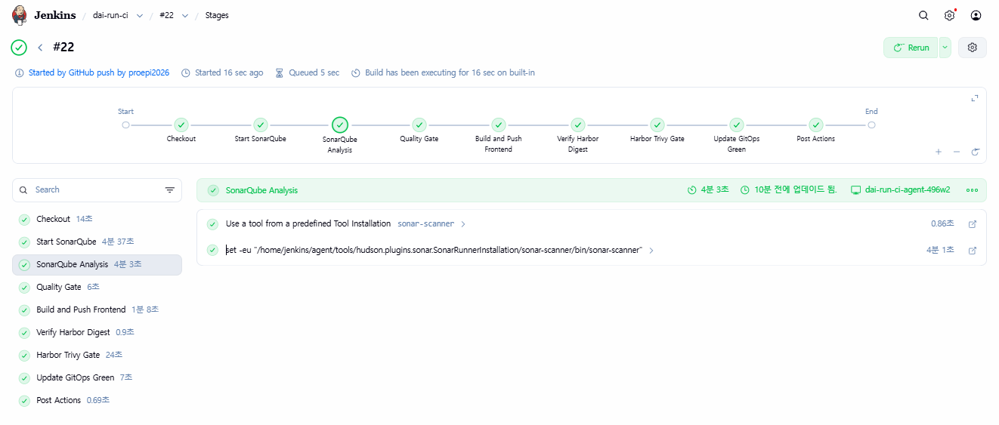
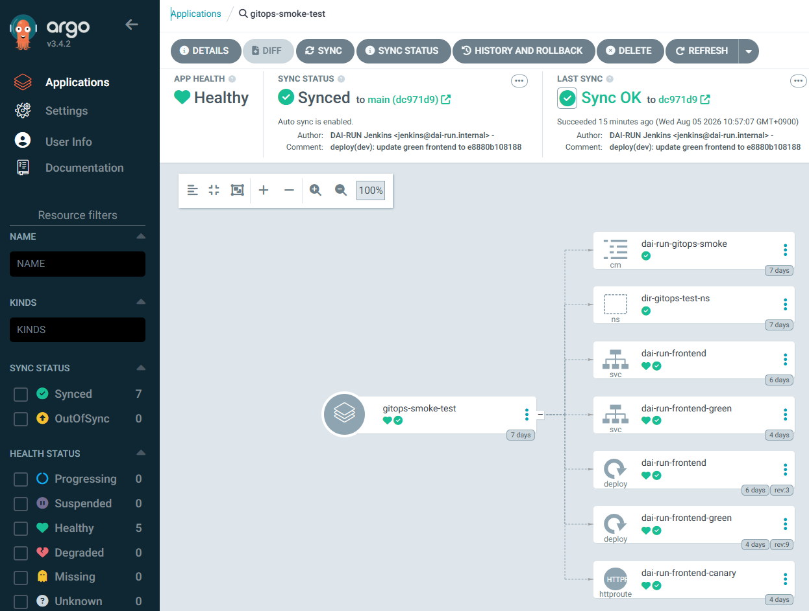
코스·날씨는 실제 DB에서 조회하고, 러닝 지식이 필요한 상담은 Bedrock RAG로 연결했습니다. 데이터 모델링 경험을 사용자 질문에 답하는 기능까지 확장했습니다.
러닝 사이트와 SNS 코스 데이터를 정리했습니다. 로그인 사용자 좌표 또는 최근 러닝 시작 위치를 기준으로 PostGIS 반경 5km 안의 코스를 조회해 최대 5개를 안내합니다.
지역·시각에 맞는 저장 예보를 조회하고 단순 날씨 질문은 규칙 기반 안내로 먼저 답합니다. 복합 상담은 사용자 문맥과 RAG 검색 근거를 함께 활용합니다.
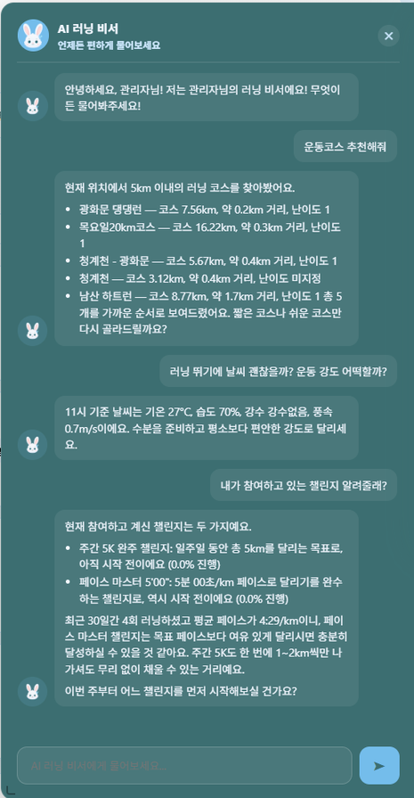
주변 코스의 길이·거리·난이도와 11시 기준 기온 27°C·습도 70%에 맞춘 러닝 안내를 확인했습니다.
AWS 발표 6페이지의 시연 자료입니다. 현재 날씨가 아니며, 공개 비로그인 접속에서는 개인화 날씨 조회를 확인하지 못했습니다.
시연 증빙 PDF ↗“어디서 달릴까?”와 “오늘 달려도 괜찮을까?”에 답하는 러닝 비서입니다. 정확한 코스·날씨는 DB에서 조회하고, 러닝 지식이 필요한 상담은 Bedrock Knowledge Base와 LLM으로 연결했습니다.
데이터 준비 러닝 사이트의 제공 코스와 SNS(인스타그램)에서 받은 코스 데이터를 정리했습니다. 도커 발표자료에도 공식 코스 자료·인스타그램·블로그·러닝 커뮤니티를 수집 출처로 기록했습니다.
조회 흐름 로그인 사용자와 요청 좌표를 확인하고, 좌표가 없으면 마지막 러닝 시작 위치를 사용합니다. PostGIS로 반경 5km의 활성 코스를 조회한 뒤 가까운 순·짧은 순·쉬운 순 등의 요청 조건으로 정렬합니다.
응답 구성 코스명, 코스 길이, 사용자와의 거리, 난이도를 최대 5개까지 안내하고 후속 질문을 제안합니다. 위치가 없거나 후보가 없으면 그 이유를 안내합니다.
현재 위치에서 5km 이내의 러닝 코스를 찾아봤어요.
광화문 댕댕런 — 코스 7.56km, 약 0.2km 거리, 난이도 1
총 5개를 가까운 순서로 보여드렸어요. 짧은 코스나 쉬운 코스만 다시 골라드릴까요?
데이터 연결 저장된 기상·대기질 데이터를 AI의 조회 문맥에 연결했습니다. 단순 날씨 질문은 사용자 지역과 현재 시각에 가까운 예보를 조회해 기온·습도·강수·풍속과 러닝 가이드를 반환합니다.
응답 분기 단순 사실 질문은 DB 결과와 규칙 기반 안내로 먼저 답합니다. 더 복합적인 러닝 상담은 프로필·기록·환경 정보와 RAG 검색 근거를 LLM에 전달합니다.
11시 기준 날씨는 기온 27°C, 습도 70%, 강수없음, 풍속 0.7m/s이에요.
수분을 준비하고 평소보다 편안한 강도로 달리세요.
온프레미스 단계는 Kafka를 포함한 수집·이벤트 구조로 작업했습니다. 첨부 AWS 최종 소스는 EventBridge → Lambda(기상청·에어코리아 수집) → DynamoDB → EKS consumer → PostgreSQL로 이전되어 있습니다. 챗봇은 Kafka에 직접 질문하는 대신 PostgreSQL의 environment.weather_hourly 등 조회 도구를 사용합니다.
2026.09.18 공개 접속에서는 메인 날씨의 수집 시각과 값을 확인했습니다. 비로그인 챗봇은 현재 날씨를 확인할 수 없다고 응답했습니다. 로그인·지역 정보가 포함된 개인화 응답은 AWS 발표자료의 시연 화면으로 확인했으며, 현재 공개 접속 확인과 구분합니다. 지역 불일치·오래된 예보의 처리 기준은 후속 점검 과제입니다.
러닝 가이드·문제 해결·기어 CSV와 관련 문서를 RAG 자료로 정리했습니다. S3 자료를 청크·임베딩·벡터 검색으로 연결하는 Bedrock Knowledge Base를 사용하고 retrieve_and_generate 응답의 세션과 참고 자료 URI를 전달합니다.
웹/백엔드의 인증 사용자 식별자와 프로필·최근 기록을 조회 문맥에 연결했습니다. 부상·날씨 영향 등 상담은 자료 기반의 안내로 구성하고, 의료 진단 오인·프롬프트 인젝션·자격증명 요청·도메인 이탈을 가드레일로 점검했습니다.
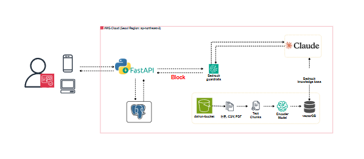
코스·날씨·개인 기록을 조회하는 대화와 러닝 지식을 안내하는 대화를 함께 구성했습니다. 아래 이미지는 AWS 발표 당시 시연 기록이며 현재 운영 데이터로 재생한 결과는 아닙니다.
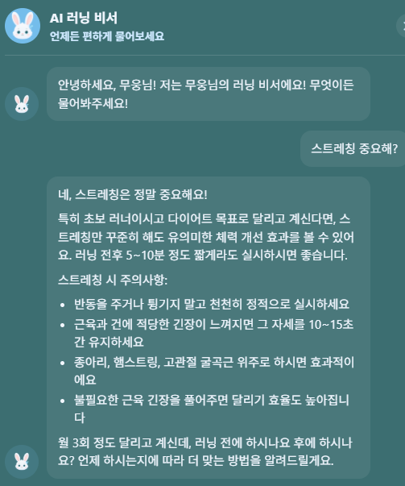
도커 발표자료에는 메타데이터 부족과 간접 관련 연구 혼재를 개선 과제로 기록했습니다. 주제별 분류·출처와 대상 메타데이터·재동기화를 보완하고, 응답의 근거와 부상 관련 안내 품질을 회귀 평가하는 방향으로 발전시킵니다.
원인 — 초기 DB 도구가 실제 테이블·컬럼과 달랐습니다.
조치 — information_schema와 기존 SQL/TypeScript 쿼리를 읽기 전용으로 확인해 조회 도구를 수정했습니다.
결과 — 작업일지에서 DB 조회와 프롬프트 문맥 생성을 확인했습니다. 해당 검증 시점의 Bedrock 최종 답변은 미검증으로 구분합니다.
원인 — 한글 접두어 매칭이 정상 질문을 차단하는 오탐을 만들었습니다.
조치 — 가드레일 매칭을 교정하고 정상 질문과 차단 질문을 구분해 점검했습니다.
보완 — 허용·차단·다중 대화의 회귀 사례를 지속적으로 확장하는 것이 중요했습니다.
원인 — 초기 코드와 설정 예시에 연결정보가 섞여 있었습니다.
조치 — 환경변수와 AWS 기본 자격증명 체인을 사용하도록 변경하고 알려진 노출 패턴을 재검색했습니다.
배운 점 — 코드 제거와 자격증명 교체는 별도 작업입니다. 공개 자료에서는 자격증명과 연결 비밀값을 제외하고, 발표용 시연 대화만 증빙으로 사용했습니다.
별도 코스 추천 통합에서는 SSR이 timeout 없는 Bedrock 응답을 동기 대기했습니다. timeout·백그라운드 처리·중복 요청 방지·재조회를 적용했습니다.
당시 보고서의 초기 응답 측정은 5.58초 → 0.099초입니다. 특정 실습 측정이며 챗봇 응답 속도나 일반적인 SLA로 확대하지 않았습니다.
필요한 근거를 선택해 살펴보세요. 원본 구성도와 서비스 화면, 추가 문제 해결 기록을 유지했습니다.
온프레미스 Jenkins·SonarQube·Harbor에서 시작해 AWS GitLab CI·ECR·GitOps로 확장한 배포 구성입니다. 변경 감지부터 클러스터 반영까지 각 단계의 입력과 실패 조건을 명확히 했습니다.
Application Repository의 변경을 Jenkins가 받아 빌드와 검사를 실행하고, Harbor에 후보 이미지를 올린 뒤 검증된 이미지 식별자를 GitOps 저장소에 전달했습니다. Argo CD는 GitOps 변경을 동기화하고 Sync·Health 상태로 배포를 확인합니다.
원본 설계도에는 Controller의 Executor를 0으로 두고 Kubernetes Agent Pod에 빌드 도구·BuildKit·Crane을 분리한 구조가 담겨 있습니다. 빌드 작업과 클러스터 배포 권한의 경계를 나누고, AWS 단계에서는 같은 GitOps 원칙을 GitLab Runner·ECR로 옮겼습니다.
온프레미스의 Jenkins·Harbor 구성을 AWS로 옮기며 GitLab을 소스 저장소와 CI 파이프라인의 중심으로 구성했습니다. GitLab Runner가 검사·이미지 빌드를 실행하고, ECR에 저장한 이미지의 digest를 GitOps 저장소에 반영합니다.
구축 포인트 — .gitlab-ci.yml의 Job과 변경 감지·빌드 스크립트를 연결하고, 검사 보고서 보관·취약점 차단·GitOps MR 자동화·동시 배포 제어를 구성했습니다. OWASP ZAP은 별도 smoke-test 환경의 웹 응답 검사로 분리했습니다.
services.tsv에 감시 경로·Dockerfile·빌드 컨텍스트·ECR 저장소를 연결했습니다. MR은 diff base, 일반 push는 이전 SHA를 기준으로 변경 대상을 계산하고 FORCE_SERVICES로 명시적 재빌드를 지원합니다.
변경 서비스 중 test target이 있는 대상만 단위 테스트합니다. 최종 SonarQube는 분석·Gate 결과 수집을 유지하는 비차단 검사입니다. Trivy는 HIGH/CRITICAL 보고서를 남기고 수정 가능한 CRITICAL이 있으면 ECR push 전에 실패시킵니다.
Docker 이미지를 커밋 SHA·파이프라인 번호 기반 태그로 생성합니다. Trivy는 Runner UID/GID와 Docker socket 그룹으로 실행해 캐시·보고서 소유권 문제를 줄이고, 보고서는 14일 보관합니다.
검사 통과 후 ECR로 push하고 SHA-256 digest를 조회·검증합니다. 조회 지연은 제한된 재시도로 처리하며, digest를 얻지 못하면 GitOps 갱신으로 넘어가지 않습니다.
prod frontend/backend/AI 매니페스트를 갱신한 뒤 diff와 Kustomize 렌더링을 확인합니다. GitOps stg → main MR을 push option으로 생성하고 프로젝트 정책에 맞춰 자동 병합을 요청합니다.
Argo CD가 main을 동기화합니다. 프론트엔드는 active/preview Service와 Rollout을 구성하고 HPA 참조도 함께 전환했습니다. 최종 소스는 자동 promotion이며, 초기 smoke 검증은 수동 promotion으로 분리했습니다.
Trivy가 이미지 취약점을 점검한다면 ZAP Baseline은 실행 중인 웹의 응답을 검사합니다. 운영 URL과 분리한 smoke-test 환경에 CronJob·검사 설정·NetworkPolicy를 구성하고 DNS와 검사 대상만 접근하도록 제한했습니다.
초기에는 report-only로 결과를 수집하도록 설계했습니다. 최종 매니페스트는 suspend: true로 수동 실행을 전제로 하며, 운영 배포 자동 차단으로 확대하지 않았습니다.
코드 분석·이미지 검사·웹 응답 검사를 서로 다른 계층으로 구분했습니다. 검사 결과 수집과 배포 차단을 분리해 도입하고, 다음 단계로 ZAP 오탐 기준과 배포 전후 검증·롤백 조건을 보완합니다.
resource_group: production-gitops가 파이프라인 간 동시 배포를 직렬화합니다. 서비스별 병렬 matrix 빌드는 후속 개선 과제입니다.allow_failure: true, qualitygate.wait=false; after_script에서 결과를 별도 조회.--severity CRITICAL --ignore-unfixed --exit-code 1. 수정 불가능한 취약점도 보고서에는 유지.증상·원인 — 루트 Next.js 빌드에 독립 프로젝트가 포함되고, root 소유 Trivy 캐시가 다음 Job의 쓰기를 막았습니다.
해결 — .dockerignore와 TypeScript 제외 범위를 정리하고 Trivy 컨테이너를 Runner UID/GID로 실행했습니다.
배운 점·보완 — 애플리케이션 오류와 빌드 컨텍스트·파일 소유권 오류를 분리해 진단했습니다. 서비스별 빌드 경계를 더 자동 검증할 계획입니다.
증상·원인 — 비운영 Java 실험 코드의 컴파일 산출물 누락으로 분석이 중단됐고, 이후에는 전체 레거시가 New Code로 계산됐습니다.
해결 — 실험 코드를 분석 대상에서 제외하고 특정 분석을 기준선으로 지정했습니다. 기존 이슈는 Overall Code에 유지하고 임계값을 낮추지 않았습니다.
배운 점·보완 — 기록상 Pipeline #53의 검사 단계가 통과했습니다. 최종 SonarQube는 비차단 상태이므로, 테스트 커버리지 보완 후 차단형 승격을 과제로 남겼습니다.
증상·원인 — REST API 기반 MR 생성이 토큰 권한에 막혔습니다.
해결 — API 스코프를 늘리는 대신 write_repository 권한으로 가능한 Git push option을 사용했습니다.
배운 점·보완 — 자동화가 필요로 하는 작업 단위에 맞춰 권한을 설계했습니다. 토큰과 검사 로그의 취급을 분리했습니다.
증상·원인 — Rollout 전환으로 main에서 삭제·변경된 파일을 stg가 계속 참조했습니다.
해결 — main의 변경을 stg에 병합해 선언 상태를 재정렬하고 이후 배포 MR을 진행했습니다.
배운 점·보완 — 이미지 갱신뿐 아니라 장기 배포 브랜치의 기준선도 관리해야 함을 배웠습니다. 갱신 전 drift 검증을 보완 과제로 정리했습니다.
증상·원인 — 수동 promotion 대기를 배포 실패로 오판해 되돌리는 과정에서 Deployment와 Rollout의 selector가 겹쳤습니다.
해결 — 의도된 대기 상태를 구분하고 선언을 복구했습니다. Application의 ignoreDifferences, HPA 참조, 기존 Deployment 정리도 함께 점검했습니다.
배운 점·보완 — 배포 성공 판단을 MR 병합·Sync·Ready·트래픽 응답으로 나눴습니다. 전환 중 짧은 503 기록이 있어 절대적인 무중단 성과로 표현하지 않습니다.
증상·원인 — 온프레미스 DNS 잔존, DB 라벨·role 누락, 실제 kube-dns Service IP와 egress 정책 불일치가 겹쳤습니다.
해결 — ConfigMap·NetworkPolicy·DB 권한을 계층별로 교정하고 실제 DB 조회와 외부 DNS 요청으로 확인했습니다.
배운 점·보완 — Pod 상태에 더해 SELECT 1, DNS, 외부 API를 확인하는 운영 점검 관점을 얻었습니다.
당시 작업 기록과 최종 소스를 교차 확인했습니다. 현재 AWS 운영 환경을 재검증한 결과는 아닙니다. 초기 시연 문서의 RollingUpdate·수동 승인 설정과 최종 Rollout·자동 promotion 설정은 시점 차이로 구분했습니다.
첨부 최종 산출물의 Delta_설계도.drawio에서 Docker·k8s·AWS 탭을 각각 분리했습니다. 테스트 환경에서 클라우드로 옮겨가는 팀 전체 설계를 원본 배치 그대로 확인할 수 있습니다.


2026.09.18 dairun.site에 공개 접속해 캡처한 팀 서비스 화면입니다. 예시 데이터를 주입하지 않았으며 로그인·위치 권한이 필요한 개인화 기능은 공개 화면과 구분했습니다. 동일한 화면 규격으로 컷마다 PDF 한 페이지에 담았습니다.
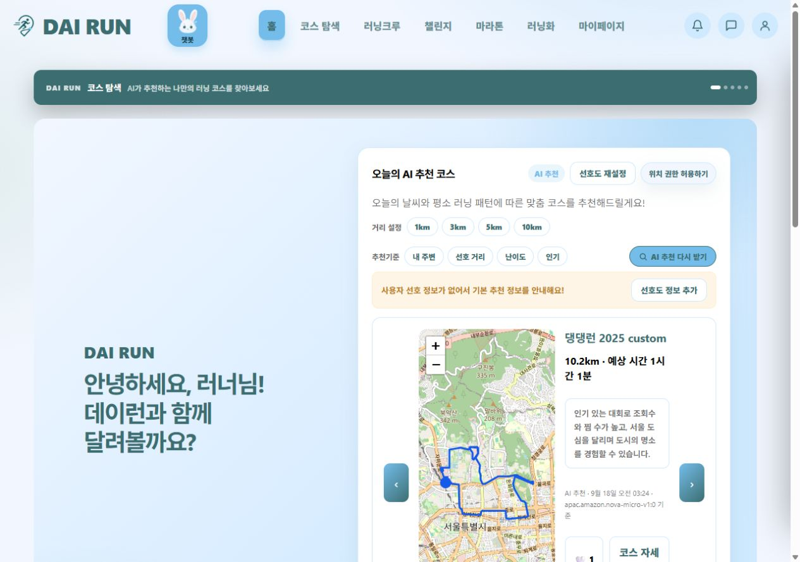
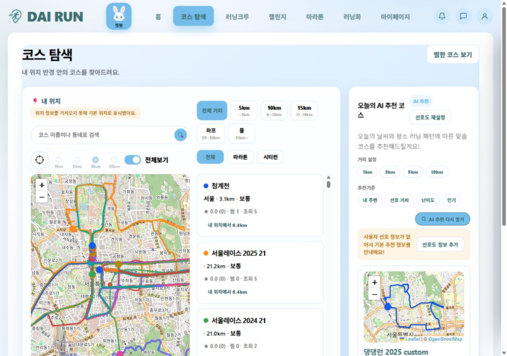
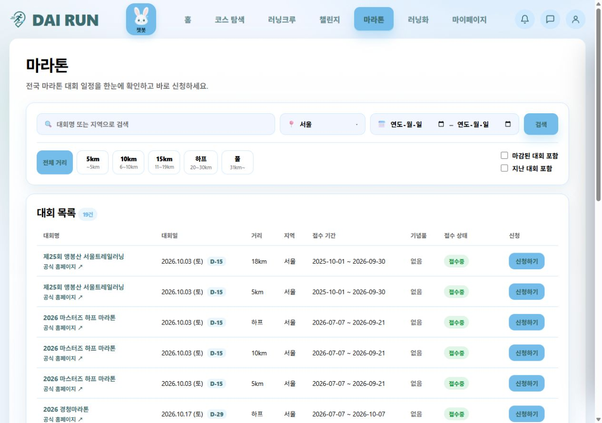
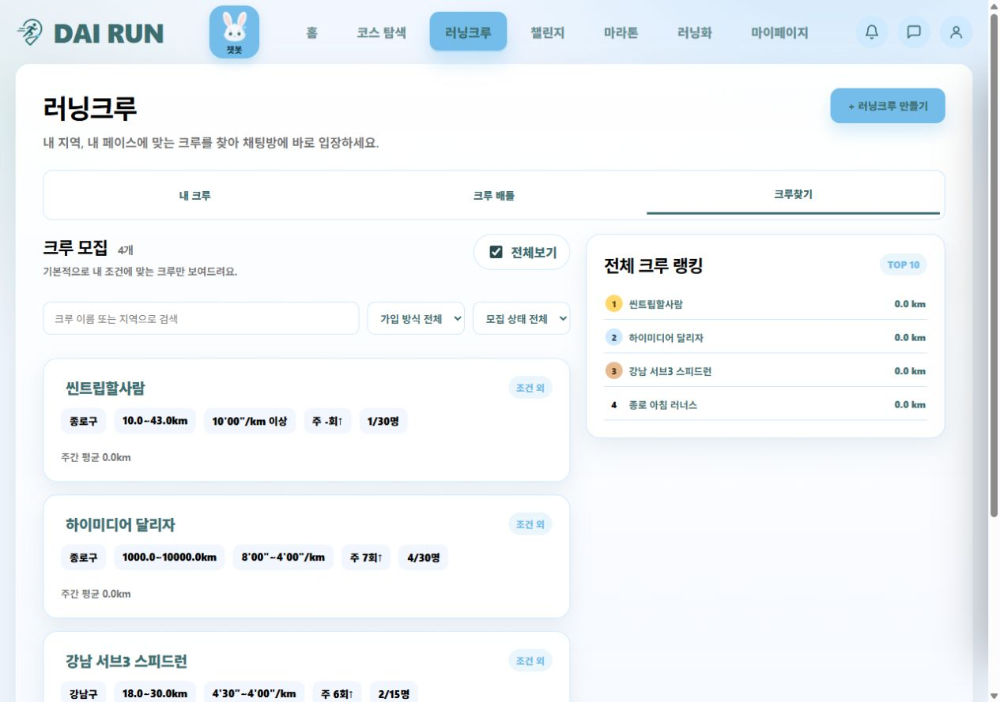
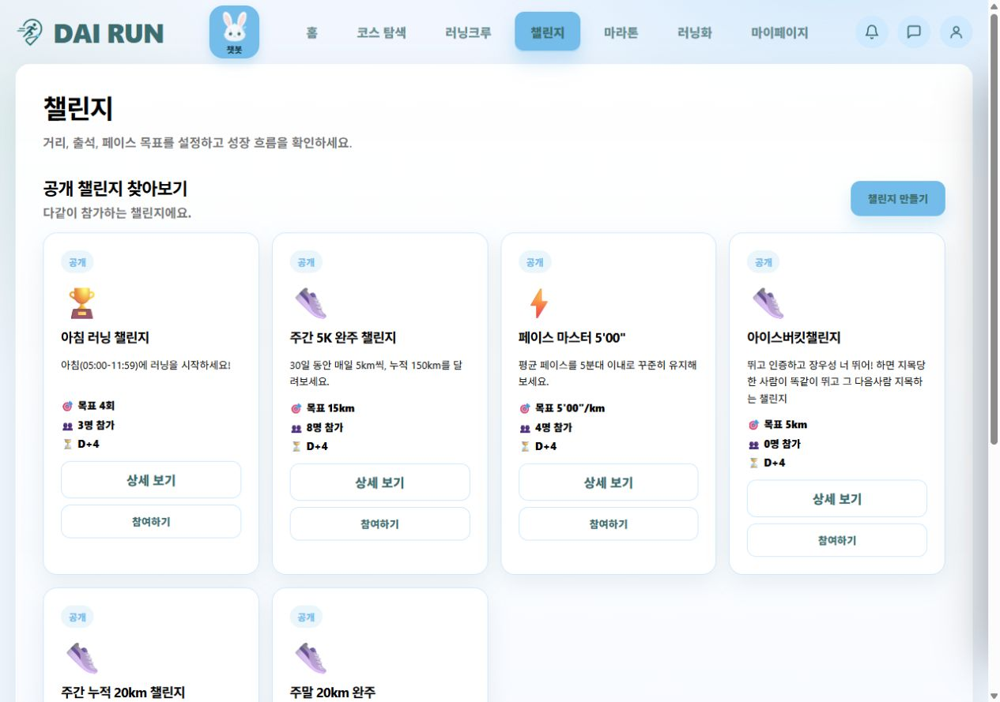
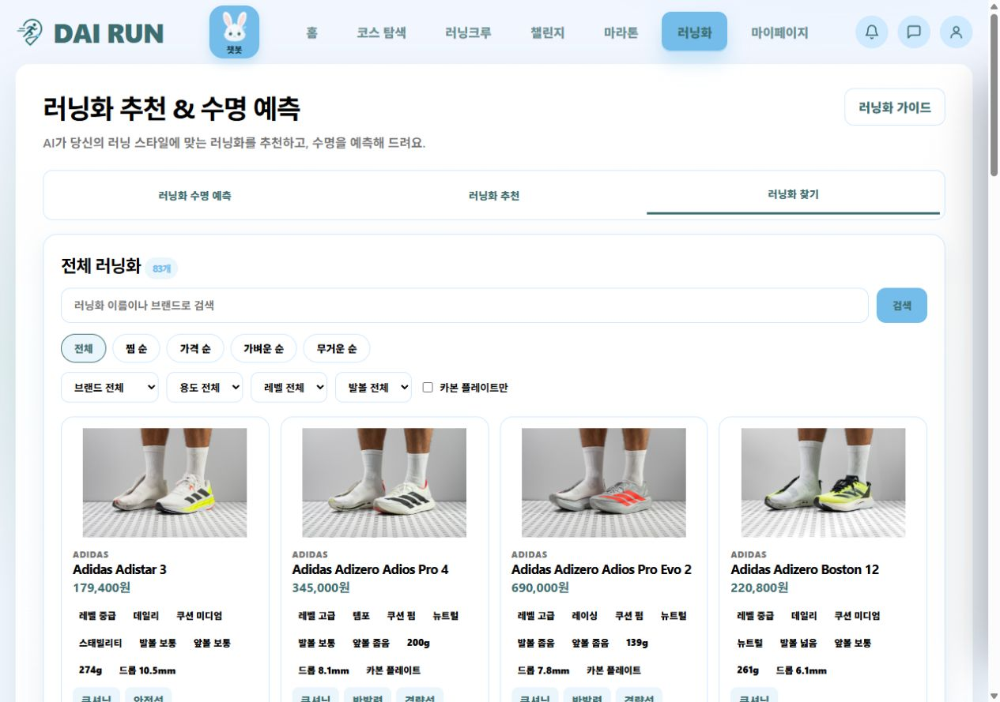
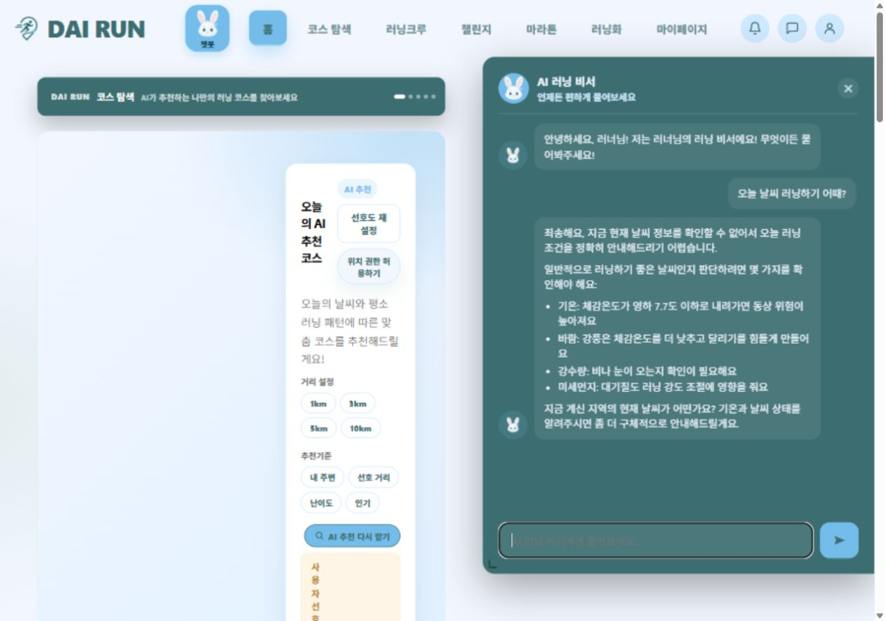
Job 성공에서 끝내지 않고 MR 상태·Argo Sync·Ready·실제 HTTP 응답을 함께 봅니다. 자동화의 마지막 확인 지점이 사용자 트래픽이라는 관점을 얻었습니다.
digest pin, 취약점 차단, 배포 직렬화와 승인 정책을 코드로 표현했습니다. 다음 단계는 pre/post 배포 검증과 자동 rollback 조건을 명시하는 것입니다.
향후 독립 서비스 빌드·스캔을 병렬 matrix로 나누고, digest 결과를 모은 후 GitOps 갱신을 한 번만 수행하는 구성을 검토합니다. 현재 구현 완료로 표시하지 않았습니다.
가드레일 오탐, 실제 DB 스키마, timeout과 대화 세션을 함께 다룹니다. 출처 유효성·허용 질문·실패 응답을 고정 평가 사례로 관리하는 것이 다음 과제입니다.
CI / Registry GitLab CI · GitLab Runner · Jenkins · Docker · Harbor · Amazon ECR
Security SonarQube · Trivy · OWASP ZAP · 환경변수 / CI masked variables
CD / Cluster GitOps · Kustomize · Argo CD · Argo Rollouts · AWS EKS · HPA / KEDA
AI / Data ERD · 개념/논리/물리 모델링 · Python · FastAPI · boto3 · Amazon Bedrock Knowledge Base · PostgreSQL · PostGIS
Network / Ops strongSwan · IPsec / IKEv2 · NAT-T · DNS · NetworkPolicy · External Secrets
Team application Next.js · React · TypeScript · MSA · Kafka / SNS·SQS